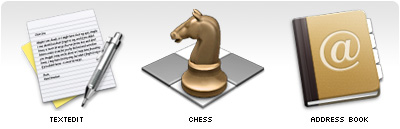
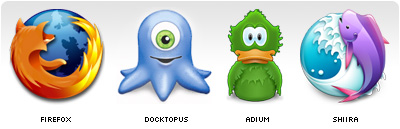

All art is subject to the subjective thought of the viewer. What one person full-heartedly loves will be completely disliked by another. This fact makes it hard to create art for commercial purposes. A commercial instance will always want a creation that will positively support and promote their product and will be liked by all of their customers. In some cases they even want proof. A creator will always want to make something creative and original while also trying to please the customer. Every visual communicator will recognize these challenges and will struggle with them.
So the question arises, how does one make sure that an icon properly conveys the application's subject and functionality while also being generally liked? Unfortunately, I haven't yet found the answer to this question, and I doubt I will ever find the one answer, but I will keep looking for it.
There are however some subjects, some technical some theoretical, that are very useful to talk about in order to better understand how to create a good icon. Previously I wrote about icon differentiation, and I intend to write about a variety of similar related subject the coming month. For those in search of more technical articles I found these that go into some of the details of icon design: Bitmap vs. Vector in icon design, Scalable Icons, Icon Design Tip: weight, Creative Bits: OSX Toolbar Icons.
This time I want to talk about obviousness, which is a strange word in the context of design. It's something you would normally want to stay away from, as the consensus is that art is about innovation and being original. But I'm not talking about the "negative" obvious, I'm talking about the positive one. I treasure the books, websites and gadgets that are easy to figure out while having a distinct look and feel of their own. It's the obvious where you think: "how could it ever be anything else".
Some good examples of where the icons have, in my opinion, the perfect visual metaphors.
For any kind of interface with humans, obviousness is of great importance. Decreasing the amount of time it takes for a user to understand what you are trying to say, should be the goal of any good interaction/interface designer and, therefore, any icon designer.
One of the hardest, if not the hardest, part of designing icons is finding strong enough visual metaphors that explain everything in one single image. A lot of designers I meet think designing an icon is easy, and technically it most certainly is nothing more than styles and render tricks. Just try to copy an icon from A to Z and you will see how easy it is. After you have done that try and create a new original icon for any of the applications you use daily. You will quickly discover how hard it actually is, even when you exactly know what the app does, to design a new original icon for them. Apart from coming up with something new, there is a lot more to it than just good looks.
In most cases the name and the functionality of the application will be the main clues where to start. One thing I can tell in advance is that it will be far easier to create an icon for a small app then for a big bulky feature saturated application. And the reason is simple: if you have to convey "subject and functionality" and the application is able to do a lot with a lot, you will have to make some good decisions. For a one trick pony it will be a lot easier to find the appropriate visual metaphor.
But in a lot of cases (the bigger apps, complex technologies) there simply isn't any easy or simple way to visualize what the app does. In those cases you might just have to come up with a more logo or pictogram like image. Those are the icons that heavily rely on their style.
Some examples where it was obviously hard to find a good simple visual metaphor, style was used to compensate. But they were smart enough to leave clues in both the name and the icon.
But between these two extremes, simple/obvious and complex/abstract, there is a fascinating area of opportunities. And from experience I have learned that in that work space the most interesting icons are created. As mentioned in my brief interview with Gil Turnbull for MacDevCentre:
I guess there are two extremes in icon design: photo realism (Aqua) and abstract. Then there is the middle area, more a fantasy area; that is where the fun stuff happens, like the Adium or Docktopus icon. No-one in their right mind would make it or think about it; the sport is to do it nonetheless.
To be honest I do have to advise everybody to first and for most try and create an icon that simply tries to depict the applications subject and functionality. But just depicting what an application can do is not always that sexy, can even be dull, and can be impossible in some cases. The danger however of the middle area is that the icon can loose any connection with the actual application. In some cases only the applications name can be recognized in the icon, and sometimes there isn't a single clue.
It's funny how all of these icons have animals incorporated in them, but that is besides the point. Originality is not an issue here nor is recognizability. But based on the icons not a single human being could be able to tell what the application does. Even if you provide them with the application name people wouldn't get much farther then a guess.
Years ago Jeff Raskin wrote in his book "The Human Interface":
Instead of icons explaining, we have found that icons often require explanation.So where do we draw the line? Is there even a line? Everybody has their own opinion on what icon they like and which not. It seems that users that have been using computers for a while no longer care if an icon explains anything. Probably because they have become used to the fact that a lot of icons are really bad, and so they no longer expect them to explain anything, and just rely on their visual recognisability. Or maybe they don't care because explanatory icons are not sexy or fun. Those icons don't really stand out, but in stead only support the app. But for novice computer users icons and application names such as the ones shown above are of no help what so ever.
It's for this group of people where obviousness is of great importance. But if it's so important for them it should be just as important for everybody else. Icons were introduced to replace combinations of words and sentences, but if the meaning of an icon or an app name isn't visible how is one supposed to understand anything?
Icons are objects that have to be constructed based on what their goal is: visualize meaning. Step by step you should decide what works, what doesn't, how things can be improved and what step to take next. Rarely if ever is designing an icon something that is successful in the first few steps. The result might look good, but that should never be a goal. Icons should always have a natural balance between being functional and decorative.
Always do what "works best", guidelines are not there to rule but to guide you. Even though the Docktopus icon doesn't follow the above guides it's still my personal favorite icon.